Hardware of Control Systems and Case Studies
In this notebook, we’ll introduce the hardware components commonly found in control systems, particularly in the industrial sector. While we won’t delve into exhaustive detail about each component, our goal is to provide a clear understanding of their basic characteristics and how they influence a given control system’s behavior.
Case Study: Speed Control System
To kickstart our exploration, let’s consider a speed control system. In this system, the primary objective is to control the speed of a load. We’ll use this example to showcase the various components involved and their interactions.
System Overview:
Imagine a scenario where you wish to control the speed of a specific load, represented by parameters \(J\) (moment of inertia) and \(B\) (viscous friction). This load is subjected to a disturbance torque, \(T_w\).
Our goal is to ensure that the load maintains a specified speed, \(\omega\), even in the presence of disturbances.
| 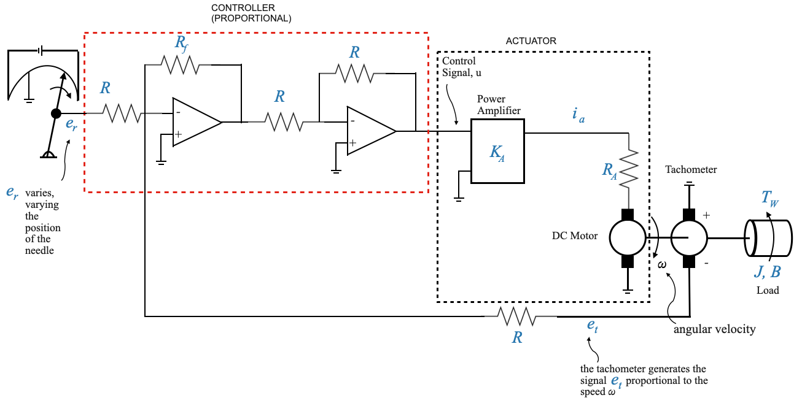 |
Components and their Roles:
Actuator (Motor and Power Amplifier):
- The actuator provides the necessary torque to drive the load at the desired speed, \(\omega\).
- It comprises a motor combined with a power amplifier.
- The actuator receives a control signal, \(u\), from a controller.
Controller (Amplifier):
- In this basic setup, the controller is a simple amplifier. However, in more advanced configurations, it could be a complex system involving the derivative or integral of an error signal.
- The controller’s primary role is to process the error signal and produce an appropriate control signal, \(u\).
- We will see how to design controllers later
Reference Input Elements (Potentiometer):
- This component provides the reference signal, \(e_r\), which corresponds to the required commanded speed, \(\omega_r\) (not shown in the diagram). We would like \(\omega \rightarrow \omega_r\)
- By adjusting the position of the potentiometer’s wiper arm, one can change the reference signal, thereby commanding a different speed.
Feedback Element (Tachogenerator):
- The tachogenerator senses the actual speed, \(\omega_r\), and produces a feedback signal, \(e_t\), that’s proportional to this speed.
- This feedback signal is essential to compare the actual speed with the desired speed and generate an error signal.
- The difference between \(e_r\) (proportional to controlled variable) and \(e_t\) (proportional to commanded variable) provides the actuating error signal \(\hat{e}\).
- The actuating error signal \(\hat{e}\) is amplified through the controller to generate the control signal \(u\) and provided to the actuator that runs the load.
Keep in mind that the primary goal of controller design is to adjust it appropriately to meet specific objectives. While other components, like the motor, remain constant and may not be easily modified, it’s more practical and efficient to alter the controller settings.
Block Diagram Representation:
The physical system can be abstracted into a block diagram to visualize the feedback structure and the fundamental elements in a more structured manner.
| 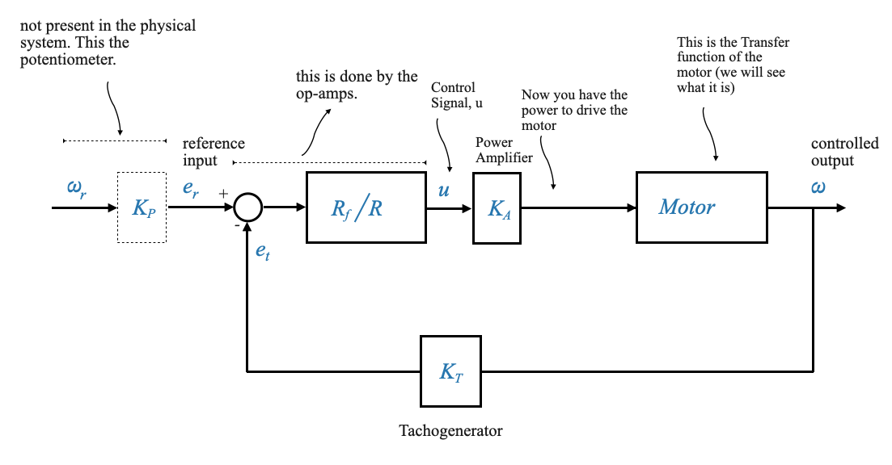 |
The feedback element, such as the tachogenerator (with constant \(K_T\)), provides real-time information about the system’s current state (in this case, the actual speed). This feedback allows the controller to compare the actual speed with the desired speed and make necessary adjustments to reduce any discrepancies.
Compare the control structure with the feedback control loops that we discussed before (from \(e_r\) to \(\omega\)). This is a non-unity feedback structure.
The transfer function of the sensor (the tachogenerator) is \(K_T\).
This configuration can be converted into a unity-feedback format to facilitate analysis and design, all while preserving the vital details of the system. For this conversion to be effective, the block bridging $ _r $ and $ e_r $ should possess a transfer function equivalent to $ K_T $. Or in other words, the potentiometer’s constant, \(K_P\), should be set equal to the tachogenerator’s constant, \(K_T\).
The actuation error signal is \(\hat{e} = e_r - e_t\). This is a voltage signal. The unit is Volts, not radians per seconds. These Volts will be proportional to the error in speed if and only if \(K_P=K_T\). This is the job of the control engineer! You can set the constant of the potentiometer.
The reference input element might not be physically present in the system (like the tachogenerator) but I still have the block in the diagram because it explains the working of the system!
We can now re-write the block diagram as the equivalent unity feedback
| 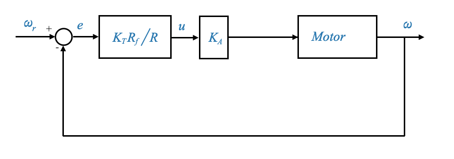 |
This diagram has the same equations of the previous one. This is an equivalent block diagram representation which holds the same mathematical relationship as the original block diagram between \(\omega\) and \(\omega_r\).
For this block diagram, \(e\) represents the system error — the difference between the commanded and the actual speed.
A unity feedback system turns out to be more convenient for analysis and design.
Analyzing the Motor Block
Let’s delve deeper into the dynamics of the motor and its representation in block diagrams to complete the previous block diagram.
The armature-controlled motor is a specific type of motor where the speed is controlled by varying the voltage across its armature. A schematic is reported in the picture below:
Figure from Control Systems Principles and Design
- The non-turning part (called the stator) has magnets which establish a field across the turning part (called the rotor).
- The magnets may be electromagnets or, for small motors, permanent magnets. In an electromagnet motor, the stator is wound with wire and current is forced through this winding (called the field winding). For a constant field current \(i_f\), the magnetic flux \(\phi\) is constant, and the magnetic flux may be varied by varying the field current.
- The rotor is wound with wire and through this winding (called the armature winding) a current \(i_a\) is forced through the (stationary) brushes and the (rotating) commutator. The reaction of the magnetic flux \(\phi\) with the armature current \(i_a\) produces a torque \(T_M\) that forces the armature to rotate. The relationship among the developed torque \(T_M\) (newton-m), flux (webers) and current \(i_a\) (amps) is:
\[ T_M = K_T i_a \]
- As the armature rotates in the magnetic field, a voltage is induced into the armature winding.
- This voltage is 180° out of phase with the applied armature voltage and is therefore called back emf.
- The relationship among the back emf \(e_b\), (volts), rotor velocity \(\omega\) (rad/sec) and flux \(\phi\) (webers) is:
\[ e_b = K_b\phi\omega \]
In a permanent-magnet motor the flux \(\phi\) is constant; the torque exerted on the motor roto can therefore be controlled by varying the armature current (through \(T_M = K_T i_a\)). If the direction of the armature current is reversed, the torque is reversed.
In a wound-field motor (electromagnet motor), the torque can be controlled by varying the armature current and/or the field current. In this case,
\[ T_M = K_{Tf} i_f i_a \]
For a wound-field motor, the back emf is:
\[ e_b = K_{bf}i_f\omega \]
In general one of these is varied and the other is held constant. In the armature control mode, the field current is held constant, and \(i_a\) (armature current) is used to control the torque. In the field-control mode, the armature current is held constant, and \(i_f\) (field current) is used to control the torque.
| 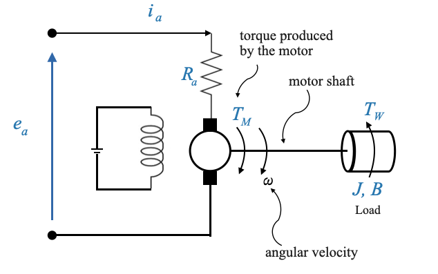 |
Motor’s Components
Armature: The armature is the primary rotating component of the motor. It carries the current (often referred to as the armature current, \(i_a\), which interacts with the magnetic field produced by the field windings. This interaction between the current and the magnetic field results in a torque that causes the armature to rotate. The voltage across the armature (\(e_a\)) and the current through it (\(i_a\)) determine the speed and torque of the motor.
Field Windings: These are coils wrapped around the motor’s stator, which produce a magnetic field when energized. When current passes through the field windings, it produces a magnetic field. In an armature-controlled motor, the field current (\(i_f\)) is typically held constant, ensuring a consistent magnetic field.
- The strength of the magnetic field generated by the field windings affects the motor’s torque and speed.
- By varying the field current, one can control the motor’s characteristics, especially in field-controlled motors.
- Back EMF (\(e_b\)), (Electromotive Force): As the armature rotates, it induces a voltage that opposes the applied armature voltage. This induced voltage is called the back EMF (\(e_b\)).
It acts as a natural feedback mechanism: as the motor speed increases, the back EMF increases, which in turn reduces the net voltage across the armature and thus limits the speed.
It’s directly proportional to the motor’s speed.
The back EMF plays a crucial role in stabilizing the motor’s speed. Understanding its dynamics is essential for designing controllers that can efficiently regulate motor speed, especially in armature-controlled motors.
The motor in our control system is characterized by:
- applied armature voltage, \(e_a\)
- its armature resistance, \(R_a\)
- and current \(i_a\).
When it runs, it produces a torque \(T_M\). This torque, along with a disturbance torque \(T_W\), acts on the motor shaft.
Commutator A commutator is essential in a direct current (DC) motor because it serves the function of switching the direction of current through the motor’s windings as the armature rotates. This switching is necessary to maintain a continuous rotational motion.
Rotation Principle: In a DC motor, the armature (the rotating part) is placed within a magnetic field created by the stator (the stationary part). When electric current flows through the armature windings, it generates a force (as described by Lorentz’s law) that acts perpendicular to both the magnetic field and the current, causing the armature to rotate.
Continuous Rotation: For continuous rotation, the direction of the current in the armature windings must be reversed every half turn (180 degrees). Without this reversal, the armature would stop moving when it aligns with the magnetic field because the forces on both sides of the armature would balance out.
Function of the Commutator: The commutator, attached to the armature’s shaft, rotates with the armature. It consists of segments connected to different parts of the armature windings. Brushes, stationary conductive contacts, supply current to the commutator. As the commutator rotates, the connections between the windings and the external electrical circuit are reversed at the precise moment necessary to maintain the rotation direction of the motor. This ensures that the torque direction remains constant, allowing for continuous rotation.
Armature controlled motor model
Let’s slightly revised the previous diagram to explicit the presence of the Back EMF.

|
We can also notice that in a simplified model, the armature inductance can be neglected. In many scenarios, especially at steady state, the effects of armature resistance and back EMF dominate over the transient effects of armature inductance. Also, the armature inductance (\(L_a\)), and resistance (\(R_a\)), together define an electrical time constant for the motor, given by \(\tau_e=\frac{L_a}{R_a}\). For many motors, especially smaller ones, this electrical time constant is much smaller than the mechanical time constant (defined by parameters like the motor’s inertia and friction). If the system’s response or the control strategy doesn’t operate on a timescale where this electrical time constant is significant, it can be neglected.
In this case, we can establish the following key relationships:
- The armature current is influenced by the difference between the applied voltage and the back EMF, divided by the armature resistance:
\[ \begin{align} i_a = \frac{e_a-e_b}{R_a} \end{align} \]
- The field current \(i_f\) is constant, and \(i_a\) depends on the applied voltage \(e_a\). However, the torque produced by the motor (\(T_M\)) is proportional to the product of the two fluxes, and hence of the two currents. Since the \(i_f\) is kept constant, we can say that the torque produced by the motor is proportional to armature current:
\[ \begin{align} T_M = K_T \times i_a \end{align} \]
Where \(K_T\) is the torque constant of the motor.
The motor is called armatured controlled because we are controlling the armature current \(i_a\) through the applied voltage \(e_a\), and this makes it possible to control the speed of the motor.
- The back EMF is proportional to the speed of the motor:
\[ \begin{align} e_b = K_b \times \omega \end{align} \]
Where \(K_b\) is the back EMF constant.
- Factor in External Forces and Torques
The torque \(T_m\) is driving the load and we can write a force balance equastion, accounting for external influences like the disturbance torque \(T_W\), the inertial torque due to the motor’s inertia \(J\), and frictional torque due to viscous friction \(B\):
\[ \begin{align} T_M = J\dot{\omega} + B\omega + T_W \end{align} \]
Representing in a Block Diagram
Having understood the relationships and equations governing the motor’s dynamics, we can represent these in a block diagram.
The input signal is \(e_a\), which we can transform to \(E_a(s)\).
| 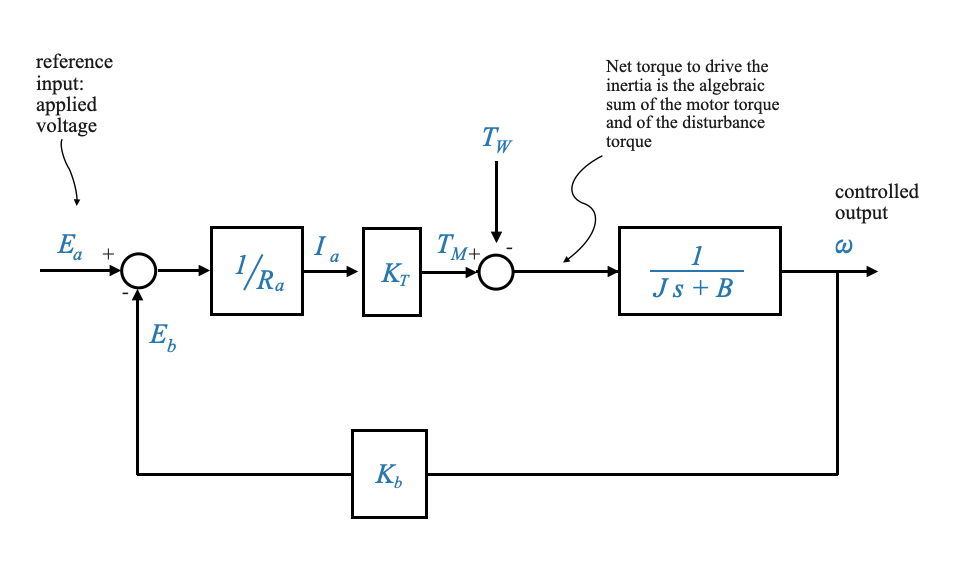 |
The feedback loop is inherent in the motor operation, and an important characteristic of the armature controlled motors. It provides damping.
The back EMF opposes the applied armature voltage, affecting the armature current and, consequently, the speed and torque of the motor. It also introduces an inherent feedback loop in armature-controlled motors, influencing the motor’s dynamic response.
Derive the Transfer Function
Combining the above relationships and equations, we derive the transfer function for the motor, relating the output speed \(\omega\) to the input armature voltage \(e_a\). If we set the \(T_W=0\), we obtain:
\[ \begin{align} \frac{\omega(s)}{E_a(s)} = \frac{\frac{K_T/R_a}{Js+B}}{1+\frac{K_bK_T/R_a}{Js+B}} = \frac{K_T/R_a}{Js + B + K_bK_T/R_a} \end{align} \]
This transfer function is crucial as it gives us a mathematical model of the motor’s dynamics, which can be used for analysis and design purposes.
We can port this transfer function into a standard first-order form:
\[ \begin{align} \frac{\omega(s)}{E_a(s)} = \frac{K_m}{\tau_m s + 1} \end{align} \]
where:
\[ \tau_m = \frac{J}{B+K_bK_T/R_a} \]
\[ K_m = \frac{K_T/R_a}{B+K_bK_T/R_a} \]
Revisiting the Original System
Let’s return to the primary system where we integrate the motor and derive the overall transfer function.

|
Using block diagram reduction methods (e.g., signal flow graphs or directly) it becomes easy to obtain the overall transfer function between any signal of interest.
In general:
\[ \omega(s) = M(s)\omega_r(s) + M_W(s)T_W(s) \]
Question (Popup): Why do we use \(\omega_r\) instead of \(e_r\) in our block diagram representation?
Answer: \(\omega_r\) is used because, for the purpose of analysis and design in the block diagram, it provides an equivalent representation. It’s about mathematical equivalency rather than physical connection.
Position Control System
While the speed control system focuses on maintaining a specific speed, the position control system aims to ensure that the load or the motor shaft reaches and maintains a desired position. This system is crucial in applications where precision in positioning is paramount.
The primary objective of the position control system is to command the position of the load. It’s fundamentally different from the speed control system we’ve previously discussed.

|
In the position control system:
- The reference input \(e_r\) is given again in terms of voltage.
- However, this voltage \(e_r\) now represents the desired position.
- The goal is for the actual load position \(\theta_L\) to follow the commanded position \(\theta_r\).
Understanding the block diagram
The reference input \(e_r\) represents the desired position, which can be set on a potentiometer. Thus, \(e_r = K_p \theta_r\), where \(K_p\) is the potentiometric constant.
The feedback signal at this stage is the load position \(\theta_L\). This position is also converted into a voltage signal, represented as \(e_0 = K_p \theta_L\).
For simplicity and to facilitate a unity-feedback block diagram representation, we assume that the potentiometric constants for the commanded and actual positions are identical. If the two constants are not equal we would not get a unity feedback block diagram.
The error detector captures the difference between the desired and actual positions. It outputs a voltage proportional to this difference, \(e_r - e_o\). Note that the input of the op-amp is \(e_r - e_o\) because the sign of the two potentiometers are reversed.
The second op-amp is an inverting amplifier to reverse the sign of the signal.
The output from the amplifier, \(u\), serves as the input to the power amplifier, resulting in the voltage \(e_a\). This voltage drives the armature-controlled motor.
The torque generated by the motor, after considering external disturbances, drives the load.
Observe that a gear train is present, serving as an intermediary between the motor shaft and the load. This is often essential when there’s a necessity for torque amplification to move the load, which simultaneously results in a reduction in speed.
The gear train is essential to provide the necessary torque amplification, especially when dealing with a heavier load.
Finally, the load position \(\theta_L\) is sensed by the potentiometer and fed back.
Gear Train in the Motor System
The gear train plays a crucial role in amplifying torque and decreasing speed, tailored to the demands of the load.
Our focus will be on modeling two gears. If the system involves more than two gears, a corresponding model must be formulated.
| 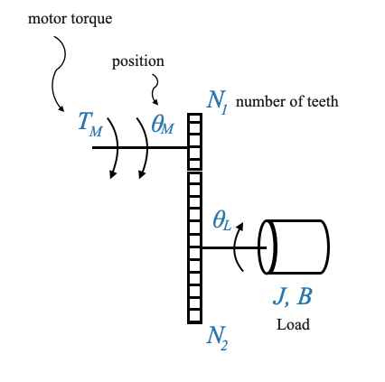 |
\(\theta_M\) signifies the motor’s position, while \(\theta_L\) denotes the load’s position. Their directions are reversed due to the mechanics of the gear train.
\(T_W\) is the disturbance torque, which, as illustrated, counteracts the load’s motion direction. However, it’s important to remember that this is an algebraic value.
Deriving the Relationship Between Torque and Speed
Let’s begin by deriving an equation that relates the torque and speeds of two connected gears.
| 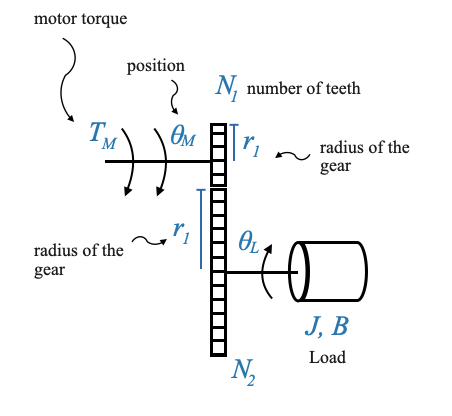 |
Consider two gears, Gear 1 and Gear 2. The radii of these gears are \(r_1\) and \(r_2\), respectively.
As the gears rotate, the number of revolutions of the two gears is different: the linear distance covered by their surfaces remains constant, leading to the relation:
\[ \theta_Mr_1 = \theta_Lr_1 \]
Pop-up Question: Why do the linear distances traveled by the two gears have to be the same? Answer: The gears are in contact, so for every revolution of one gear, the corresponding part of the other gear also travels the same linear distance.
Assuming the radii and number of teeth are proportional, we can write:
\[ \begin{align} \frac{N_1}{N_2} = \frac{\theta_L}{\theta_M} \;\;\;\;\text{(1)} \end{align} \]
This becomes our first fundamental equation. But there’s more to this story. If we differentiate the above equation \(\theta_Mr_1 = \theta_Lr_1\) with respect to time, we get the relationship between the angular velocities of the two gears:
\[ \begin{align} \frac{N_1}{N_2} = \frac{\dot{\theta}_L}{\dot{\theta}_M} \;\;\;\;\text{(1a)} \end{align} \]
The ratio \(\frac{N_1}{N_2}\) is often termed as the gear ratio, denoted by \(n\).
Examining Torque Dynamics
Now, let’s shift our focus to the torques involved.
| 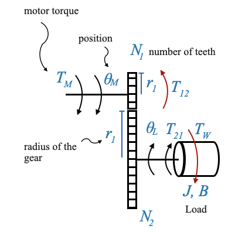 |
The torque generated by the motor is represented by \(T_M\).
The torque transmitted through the gear train to the load shaft is \(T_{21}\). This torque \(T_{21}\) is responsible to drive the load inertia against the disturbance torque \(T_W\).
Another torque to consider is \(T_{12}\), which signifies the load due to Gear 2 (and the connected load) on the motor shaft. We can intuitively understand this because the load on the motor shaft when we have the Gear 2 and when we do not have it is different.
At the point of contact between the gears, the forces developed by the two gears should equate. Therefore:
\[ \frac{T_{12}}{r_1} = \frac{T_{21}}{r_2} \]
\[ \frac{T_{12}}{T_{21}} = \frac{N_{1}}{N_2} = \frac{\dot{\theta}_L}{\dot{\theta}_M} \]
If \(n < 1\), the gear ration amplifies the torque (and reduces the speed).
Typical value is \(n=\frac{1}{30}\). Depending on the characteristics of the motor and of the load you design the needed gear ratio.
Integrating Gear Effects into the System
One of the intriguing outcomes of our discussion so far is that we can represent the combined effects of the motor and gear train as if they were a single entity. Mathematically, the entire system behaves as if there is a motor directly driving a load with an “equivalent” moment of inertia and friction. Let’s see work this out.
| 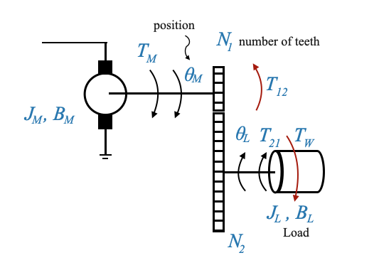 |
For the second gear, the equation at the load shaft, is:
\[ T_{21} = J_L\ddot{\theta_L} + B_L\dot{\theta_L} + T_W \]
For the first gear, the equation at the motor shaft, is:
\[ T_M = J_M\ddot{\theta_M} + B_M\dot{\theta_M} + T_{12} \]
where \(T_{12}\) represents the opposition of the load and second gear to the motor shaft.
Since \(\frac{T_{12}}{T_{21}} = \frac{N_{1}}{N_2}\), the combined effects can be expressed as:
\[ T_M = J_M\ddot{\theta_M} + B_M\dot{\theta_M} + \frac{N_{1}}{N_2}\Big[J_L\ddot{\theta_L} + B_L\dot{\theta_L} + T_W\Big] \]
Since \(n = \frac{N_1}{N_2} = \frac{\theta_L}{\theta_M}\) we can re-write the equation as a function of \(\theta_M\):
\[ T_M = J_M\ddot{\theta_M} + B_M\dot{\theta_M} + \Big(\frac{N_{1}}{N_2}\Big)^2J_L\ddot{\theta_M} + \Big(\frac{N_{1}}{N_2}\Big)^2B_L\dot{\theta_M} + \frac{N_{1}}{N_2}T_W \]
We can finally group things together:
\[ T_M = \Big(J_M+n^2J_L\Big)\ddot{\theta_M} + \Big(B_M+n^2B_L\Big)\dot{\theta_M}+ nT_W \]
Mathematically, the position control system is equivalent to the following:
\[ T_M = J_{eq}\ddot{\theta_M} + B_{eq}\dot{\theta_M}+ nT_W \]
where: - \(J_{eq} = \Big(J_M+n^2J_L\Big)\) - \(B_{eq} = \Big(B_M+n^2B_L\Big)\) - \(nT_W\), is the equivalent disturbance acting on the motor shaft (the disturbance is acting on the load in reality).
With new representation we have reported the control problem to the same one we had with the speed control.
Block Diagram
| 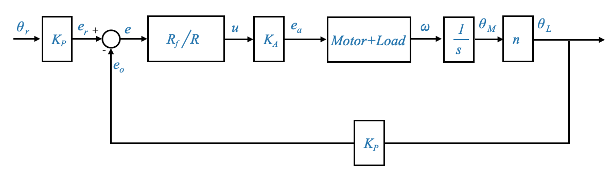 |
- The motor’s dynamics (including the effects of the gear train) is represented by the previously derived equations (see for example Section
Revisiting the Original System). - Feedback loops are introduced to account for back EMF and the position control mechanism.
Some additional comments on the DC Position Controlled System
In our previous discussions, we dived deep into the intricacies of the DC position controlled system. We can revisit this system further, exploring its significance in control systems and understanding its foundational components.
DC motors actuate many loads, making the DC position controlled system a pivotal element in automatic control. This system has several components and we saw the equivalence when we report the load and the gear train onto the motor shaft:
| 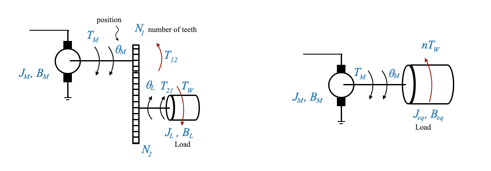 |
Figure: Left: Motor, gear train and load. Right: Equivalent representation.
From our previous discussions, we deduced that the load parameters could be mirrored onto the motor shaft. This realization allows us to mathematically represent the system in a simplified manner, without involving the gear train explicitly. For clarity, consider a system where a motor drives a load through a gear train. This system can be equivalently represented as a motor driving a direct load, provided we adjust the load’s parameters appropriately to account for the gear train’s effects.
- Equivalent Moment of Inertia on the Motor Shaft \[J_{eq} = \Big(J_M+n^2J_L\Big)\]
- Equivalent Viscous Frictional Coefficient \[B_{eq} = \Big(B_M+n^2B_L\Big)\]
Here, \(J_M\) and \(B_M\) represent the inertia due to the rotor, gears, etc., and the frictional coefficient on the motor shaft respectively. \(n\) is the gear ratio defined as the ratio of the number of teeth on the two gears, \(N_1\) and \(N_2\).
- The Core Motor Equation:
\[ T_M = J_{eq}\ddot{\theta_M} + B_{eq}\dot{\theta_M}+ nT_W \]
Please note, \(T_W\) is the disturbance on the load shaft and \(n\) reflects this disturbance onto the motor shaft.
To model our system, we start by considering the armature controlled motor. The control variable here is the armature voltage \(e_a\), while the opposing back EMF is \(e_b\). We are neglecting the armature inductance as previously discussed.
Here, for the motor loaded through a gear train, the load directly connected to it has parameters \(J\) and \(B\) reflected from the original load via the gear train. If the load is connected through a gear train \(J\) and \(B\) will include this directly. The disturbance in this context is \(nT_W\).
Block Diagram Model
From the previous picture we can generate the following block diagram, starting from the input \(e_a\) to the output \(\theta_M\).
| 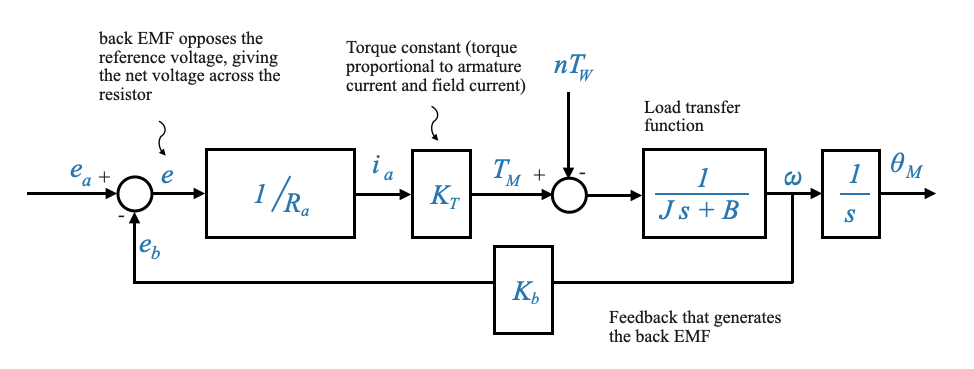 |
Figure: Block diagram showcasing the entire system, from the error detector comparing the armature voltage and back EMF, to the gear train and load parameters, and finally to the output
Based on this diagram, applying the superposition principle (and hence setting \(T_W=0\)), the transfer function relating output speed \(\omega\) to input \(e_a\) is:
\[ \frac{\omega(s)}{E_a(s)} = \frac{\frac{K_T/R_a}{Js+B}}{\Big(1+\frac{K_bK_T/R_a}{Js+B}\Big)} = \frac{K_T/R_a}{Js+B+K_bK_T/R_a} \]
Note from the equation above how the back EMF constant \(K_b\) adds to the mechanical friction in the system (the \(B\) term), thereby providing additional damping, stabilizing the system, and making it less susceptible to oscillations (almost providing ‘electric friction’)
Our previously derived transfer function can be interpreted in its standard form for first-order systems as:
\[ \frac{\omega(s)}{E_a(s)} = \frac{K_m}{\tau_m s + 1} \]
where:
- \(K_m\) is the system’s gain.
- \(\tau_m\) is the mechanical time constant, which can be computed as:
\[ \tau_m = \frac{J}{B+\frac{K_TK_b}{R_a}} \]
If we’re more interested in the relationship between position \(\theta_M\) and the input voltage \(e_a\), the transfer function becomes to:
\[ \frac{\theta_M(s)}{E_a(s)} = \frac{K_m}{s\Big(\tau_m s + 1\Big)} \]
Field Controlled Motors
Having understood armature controlled motors, it’s now time to introduce the concept of field controlled motors.
In these motors, the armature current \(i_a\) remains constant, while the field current \(i_f\) is varied to control the torque \(T_M\).
\(e_f\) is the controlling voltage, it controls the torque.
| 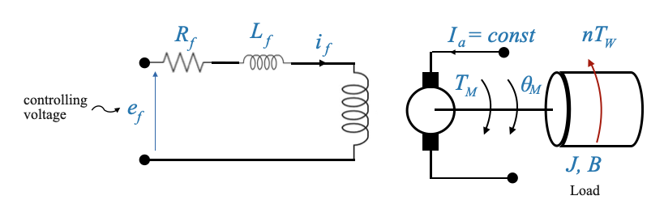 |
- Now the field resistance and inductance are not negligible.

- The ‘electric resistance’ effect is not present anymore. There is no back EMF against \(e_f\).
The resulting transfer function from \(\omega(s)\) and \(E_f(s)\) is:
\[ \frac{\omega(s)}{E_f(s)} = \frac{K^{'}_m}{(\tau_f s + 1)(\tau^{'}_m s + 1)} \]
which is a second-order model.
The transfer function from the position \(\theta_M(s)\) and \(E_f(s)\) we have a third order model:
\[ \frac{\theta_M(s)}{E_f(s)} = \frac{K^{'}_m}{s(\tau_f s + 1)(\tau^{'}_m s + 1)} \]
The higher the order of the model the more complex is the design. The additional complexity comes from the fact that \(L_f\) cannot be neglected.
Making a Motor Selection: Factors to Consider
Let’s delve deeper into how the choice between different types of motors, specifically field controlled versus armature controlled motors, is made based on specific applications. Remember, every engineering decision involves trade-offs. In our context, these decisions revolve around power, performance, cost, and specific application requirements.
- Field vs. Armature Circuit:
Power Amplifier Requirements: One significant advantage of the field circuit is the lower power amplifier requirements. The total power needed to drive the field circuit is considerably less than what’s required for the armature circuit. This means a less costly power amplifier would suffice.
Cost Implications: A direct consequence of the reduced power amplifier requirements is the cost. The power amplifier for a field circuit is generally more economical compared to that for the armature circuit.
- Challenges with Armature Current:
Maintaining a consistent armature current, especially when it’s high, poses a challenge.
- How to Keep Armature Current Constant?
- The armature current can be kept fairly consistent by using a high constant voltage source.
- If the resistance of the circuit \(R\) is considerably larger than the armature circuit’s resistance and the voltage source is robust, then the armature current \(i_a\) will remain relatively constant.

- What Causes Changes in \(i_a\) ?
- The primary culprit is the back EMF effect. This effect is evident in the armature’s side and as the back EMF changes with speed, maintaining a consistent armature current becomes challenging.
- Overcoming the Challenge:
- Using a substantial voltage source and significant resistance can help keep the armature current roughly constant. However, this approximation is more accurate when the required armature current isn’t too high. For this reason, Field Controlled Motors are a good selection for low-power servos. High power servos instead are better done with armature controlled motors. For this reason, in most industrial applications we have armature controlled motors.
- Field-Controlled vs. Armature-Controlled Motors for Different Power Needs:
- Low Power Servos: Field-controlled motors are a compelling choice for low power servos. When there’s a low power requirement, such that the armature current \(i_a\) remains low, it’s feasible to maintain that current at a reasonably constant value.
- High Power Servos: For high power servos, armature-controlled motors are typically preferred. In many industrial control applications, armature-controlled motors are chosen over field-controlled motors. These motors not only provide more power but also offer advantages like intrinsic damping, allowing for better control.
Additional comments:
Advancements have addressed some of the challenges associated with these motor drives. Some key trends include:
- Brushless DC Motors: One major challenge with the motors discussed so far is the brush friction, which introduces non-linearity into our mathematical models.
Brushless DC motors, with electronic commutation, are now available to mitigate the non-linear effects due to brush friction. Note that in our modeling we have assumed that we can have a linear model, with viscous friction only and neglecting the effects of brush fiction (which is constant frictional source independent on the speed - this would make the model non-linear).
- Gears and Backlash: Our discussion assumes a linear relationship between motor input and output through gears and the defined gear ratio.
However, in reality, gear backlash introduces non-linearity. This is due to the fact that when the gears have to reverse this will not be instantaneous (e.g., object tracking requires the tracker to move back and forth and hence the motor will need to often reverse its direction). Direct-drive motors are now designed to interface directly with the load, eliminating the need for gear trains and the associated nonlinear challenges.
- Feedback Mechanisms: Although potentiometers provide a simple way to measure angular position, they introduce their own challenges.
For example they have a finite resolution. The resolution (minimum change in output voltage obtained by moving the wiper, expressed as a percentage of the total applied voltage) of precision wire-wound potentiometers ranges from 0.001 to 0.5 percent. This discontinuous output voltage contributes to servo inaccuracy. Potentiometers are temperature-sensitive, a characteristic that affects their accuracy. The wiper contact is another limiting factor, being subject to wear and dirt and potentially producing electrical noise.
In our models we have neglected these nuances and assumed a linear relationship between \(\theta_R\) and \(e_r\) through \(\theta_R = K_p e_r\). Modern systems are leaning towards more advanced sensors that offer higher precision and better linearity.
Feedback Control using Operational Amplifiers (Op-Amps)
Let’s revisit our position control system
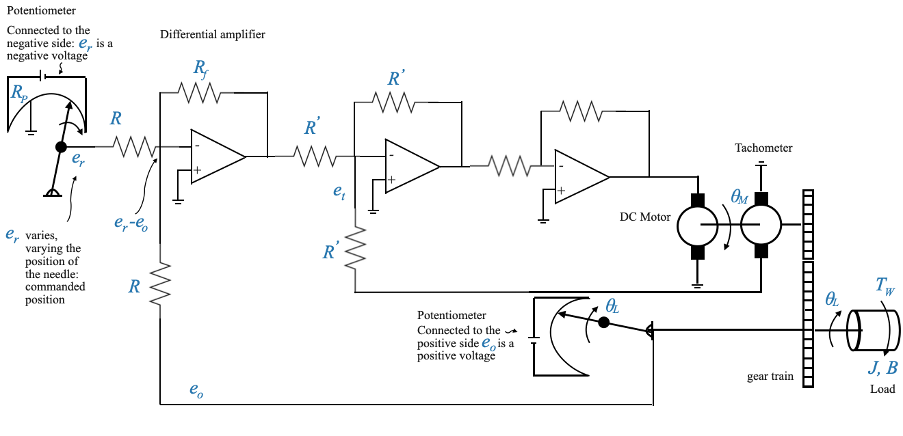Defining the Variables
The variable \(\theta_L\) is our attribute of interest - the one we want to control. For illustration, let’s assume \(\theta_L\) represents an antenna’s position. On the other hand, \(\theta_R\) is the command signal, which in many real-world applications can come digitally or from various devices.
For the purpose of this notebook, we will represent the command signal symbolically, using a wiper on a potentiometer to adjust \(\theta_R\). As the wiper moves, it adjusts the voltage (let’s call this voltage \(e_r\)), which is directly proportional to \(\theta_R\).
Potentiometer
The relationship between \(\theta_R\) and \(e_r\) depends on the potentiometer constant \(K_p\), which depends on the voltage provided to the potentiometre, and on the resistor:
\[e_r = K_P\theta_R\]
Note that we are using another potentiometer to sense the output \(\theta_L\).
Potentiometers are often used in these systems. However, they can introduce nonlinearities due to their finite resolution. For instance, a wire-wound potentiometer changes step by step, not allowing for continuous adjustments (e.g., wire-wound potentiometer). Despite this, for our mathematical model, we will assume a linear relationship for simplicity.
For now, we are using Potentiometers as representations of devices that make it possible to generate reference and feedback signals, but the actual device might be different from a potentiometer, with better linear characteristics.
From Voltage to Position Control
Let’s focus now on the first operational amplifier.
This circuit gives an output voltage proportional to the difference \(e_r−e_0\), where \(e_0\) is the feedback voltage corresponding to \(\theta_L\). This operation makes the Op-Amp behave like a differential amplifier with a specific gain (\(\frac{-R_f}{R}\)). Depending on the arrangement, the voltage output can represent either position or speed.
The Op-Amp acts as a differential amplifier, producing an output voltage based on the difference between the reference and feedback voltages.
Given the specific arragements with the potentiometers ( \(e_r\) is a negative voltage, and \(e_0\) is a positive voltage), we have:

- Note that to make the representation straightforward, we have restructured our block diagram by flipping the signs for these voltages.
We can then add the potentiometers to have the explicit presence of the two angles:
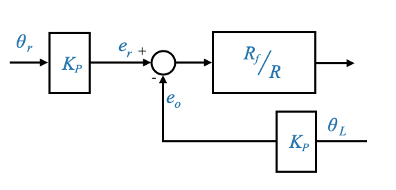This can also be equivalently written as:

- We have moved \(K_P\) inside the loop
- This is now a unity feedback loop
Incorporating Tachogenerator Feedback
A crucial part of our system is the addition of a tachogenerator, introducing a secondary (or minor) feedback loop for velocity. The voltage from the tachogenerator (\(e_t\)) plays a pivotal role in the performance and control of the system.
The second Op-Amp is also activing as a differential amplifier with gain: \(\frac{-R^{'}_f}{R^{'}}\). The input to this Op-Amp is \(e^{'}-e_t\).

The final Op-Amp is used as a power amplifier with gain: \[-\frac{R_{fp}}{R_p}\]
Note that given that we have two Op-Amps in cascade, their negative signs cancel out and we have the desired signal at the end of the chain.
We can now finish the block diagram:
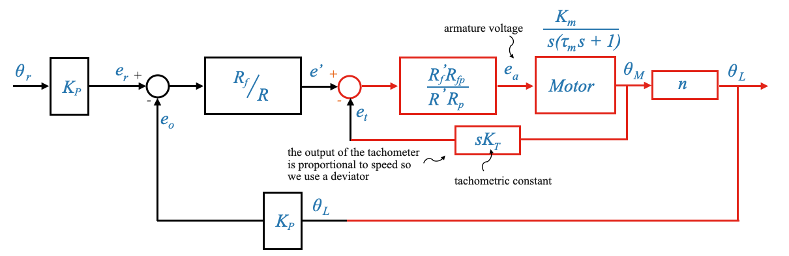Note that you can detail the block digram with a more detailed representation of the motor which includes the back EMF loop.
Remember that the gear ration is defined as:
\[n = \frac{\dot{\theta}_L}{\dot{\theta}_M} = \frac{\theta_L}{\theta_M}\]
The system has two loops:
- Primary Loop (Position Feedback): This provides feedback based on the position \(\theta_L\).
- Secondary or Minor Loop (Velocity Feedback): This loop provides feedback based on the velocity or speed. It derives its signal from a tachogenerator, symbolized by \(e_t\). This secondary loop serves a similar damping purpose as the inherent back EMF in the motor but has the advantage of being adjustable.
- Motor-internal loop: The inherent nature of the motor introduces another feedback loop, the back EMF, which isn’t directly under our control. In contrast, the tachogenerator’s output can be controlled, allowing us to adjust the system’s damping.
Breaking the loops
Breaking the velocity loop
If we break the secondary velocity feedback, what happens to the performance of the system?
The tachogenerator inherently provides information about the system’s velocity (we are feeding back the derivative of \(\theta_M\) through the tachometer).
The lack of the secondary loop leads to a Loss of Damping
The system will continue to act as a position control system but through the secondary loop we are controlling the damping of the system. The tachogenerator typically provides a damping effect to the system, helping to stabilize it. This damping effect is beneficial in minimizing oscillations around the setpoint or reference value. Without this feedback, the system might experience prolonged or even sustained oscillations upon any disturbances or setpoint changes. Performance might deteriorate.
Note that is similar to what happened when we were analysing the effect of the back EMF. The back EMF was also proportional to speed and was able to improve our damping. The only difference is that the back EMF (\(K_b\)) is out of our control (once the motor is selected you cannot change your \(K_b\)). The \(K_T\) instead is something you can explicitly control selecting the tachogenerator.
Real-world consequences: If our system were controlling the position of an antenna, a loss of damping might lead to the antenna overshooting its desired position and then oscillating back and forth before settling. This could result in interrupted or degraded communication signals.
Breaking the position loop
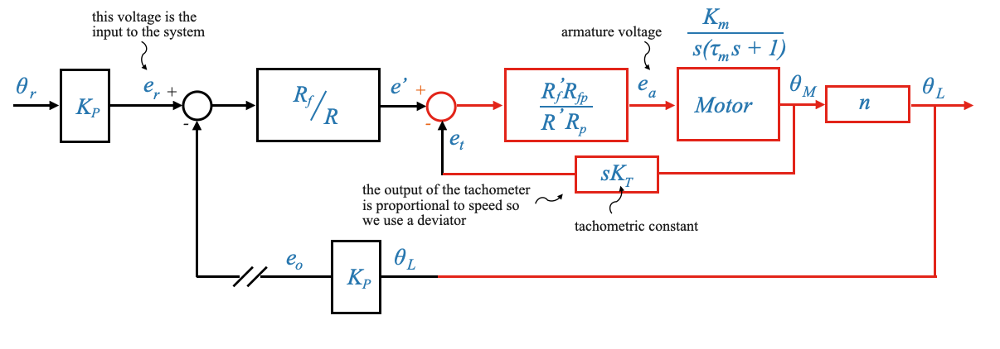When the primary feedback loop (position) is disrupted, but the secondary loop (velocity) remains, the system behaves as a speed-controlled system.
Note that the actual input we have is the voltage \(e_r\). Previously we interpreted this signal as a position.
The voltage \(e_r\) in the forward loop, which was previously interpreted as position, is now indicative of speed, given the feedback is now from the tachogenerator representing velocity.
The system becomes a speed controlled system. We can also now explicit that the tachogenerator provides a speed:

Comments on the Motor Inherent Feedback
One of the unique features of the armature-controlled motor is the inherent feedback loop due to \(K_b\).
The back EMF \(e_b\) is a voltage that’s generated in the armature windings of a motor when it is turning. It opposes the applied voltage \(e_a\), and its magnitude is proportional to the speed of the motor. The constant of proportionality is often denoted as \(K_b\).
\(K_b\) increases the value of \(B\) and hence increases the effective damping of the motor. When the motor speeds up, the back EMF increases. This increased back EMF opposes the applied voltage more strongly, effectively reducing the net voltage across the armature. This, in turn, reduces the armature current, which then decreases the torque produced by the motor. This behavior acts as a natural damping mechanism, slowing the motor down when it tries to run too fast.
This inherent feedback provides the required damping, ensuring quick damping of oscillations and faster steady-state response.
This is not available in all the motors (e.g., the field controlled motors).
Note also that the time constant of the motor decreases when \(K_b\) increases, leading to a faster response (i.e., gets to its state value quicker).
Sidebar - how does the back EMF affect damping
Remember the motor’s equations:
\[ \begin{align} i_a = \frac{e_a-e_b}{R_a} \end{align} \]
\[ \begin{align} T_M = K_T \times i_a \end{align} \]
\[ \begin{align} e_b = K_b \times \omega \end{align} \]
\[ \begin{align} T_M = J\dot{\omega} + B\omega + T_W \end{align} \]
Substituing in equation (2), the expression for \(i_a\) from (1) and then the expression for \(e_b\) from (3):
\[ \begin{align} T_M = K_T \times \frac{e_a-e_b}{R_a} = K_T \times \frac{e_a-(K_b\omega)}{R_a} \end{align} \]
The torque produced by the motor must balance out the torques resisting the motor’s motion, which we can now write as:
\[ K_T \times \frac{e_a-(K_b\omega)}{R_a} = T_M = J\dot{\omega} + B\omega + T_W \]
The back EMF does not directly entes the torque equation, it affects the armature current, which in turn affects the torque produced by the motor. The back EMF’s influence on the torque is indirect, through its influence on the armature current.
– END OF SIDEBAR
Pop-up Question: If the constant \(K_b\) were to increase (meaning the motor generates more back EMF for a given speed), would the motor be more damped or less damped?
Answer: The motor would be more damped. An increase in \(K_b\) means that for any given speed, the back EMF would be larger, opposing the applied voltage more strongly, and thus increasing the damping effect in the system.